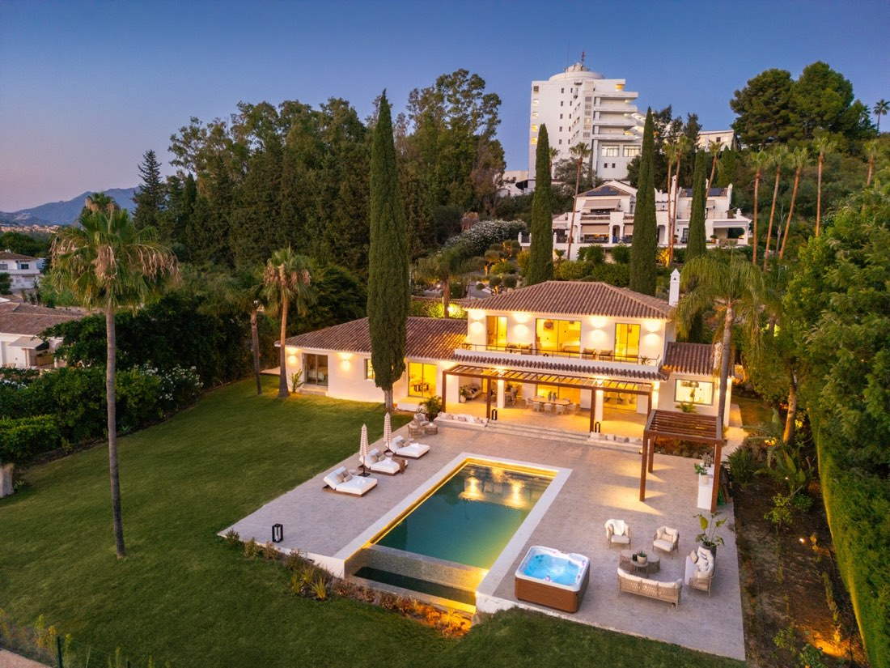

Investing with intention.
We invest in and advise on residential and commercial real estate along Spain’s Costa del Sol, guided by a practical understanding of place, property, and potential.
Look beyond the surface.
A property’s current condition does not always reflect what it could become.
In our own investments and advisory work, we seek distressed or underperforming properties where there may be a clear route to improvement. When possible, we aim to acquire at a substantial discount to a property’s potential value, while assessing the costs, timing, and risks involved.
Value can come from considered physical improvements, better use of space, or a long-term rental strategy. The right route depends on the asset and the market around it.

Built on sound fundamentals.
Our decisions start with location, condition, realistic improvement scope, and the needs of future occupants. We consider both immediate works and the longer life of the asset, including rental potential where appropriate.
That measured approach helps us pursue opportunities with a defined purpose rather than following a fixed formula.